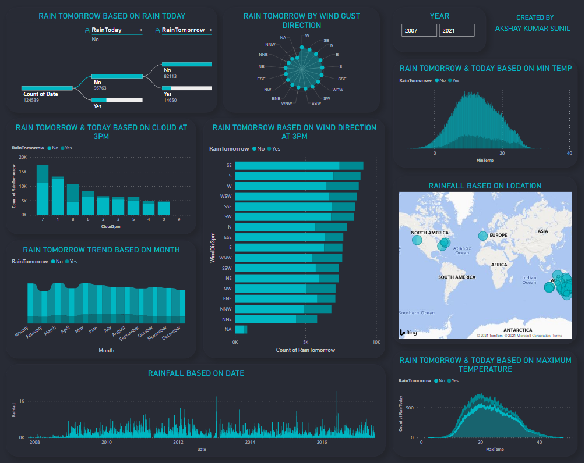
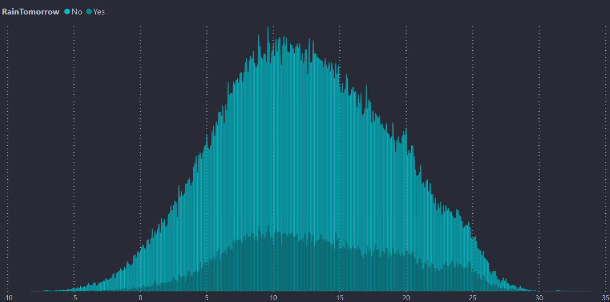
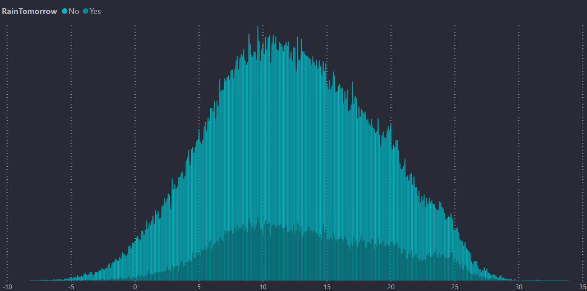
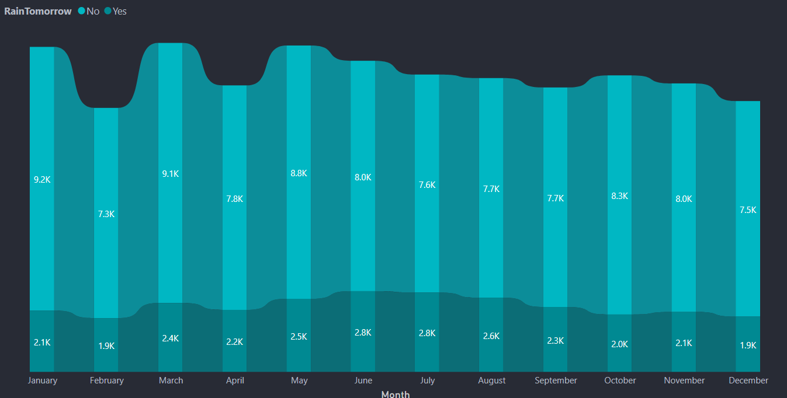
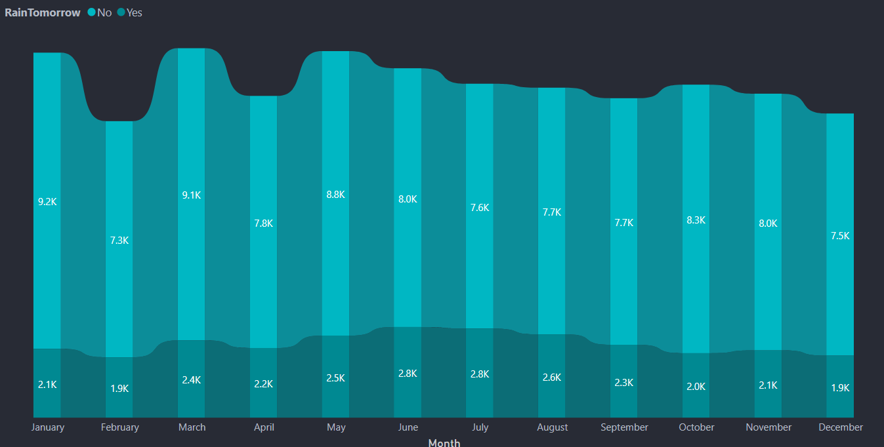

Plan Your Day
Better
"Never let a rainy day catch you off-guard again." - Rainfall Predictor V1.0 ensures that your trip to the beach or your sunny-day picnic plans never has to get interrupted by untimely rainfall.
More info"Never let a rainy day catch you off-guard again." - Rainfall Predictor V1.0 ensures that your trip to the beach or your sunny-day picnic plans never has to get interrupted by untimely rainfall.
More infoRainfall Predictor is a web app which has a Machine Learning model running at the back. The purpose of developing this app is to predict whether it will rain the next day or not. This model is based on the Rain Prediction in Australia dataset. The codes for this project can be checked in my github repo. More than 80% of Australia has an annual rainfall of less than 600 mm which is less among the all continents other than Antartica which recieves less rainfall. A place inland near Lake Eyre would only receive 81 mm of rain annually. The average annual rainfall in the Australian desert is low, ranging from 81 to 250 mm. Thunderstorms are relatively common in the region, with an annual average of 15 to 20 thunderstorms. The southern parts of Australia get the usual westerly winds and rain-bearing cold fronts that come when high–pressure systems move towards northern Australia during winter. Cold snaps may bring frosts inland, though temperatures near the coast are mild or near mild all year round. By analysing such history of weather patterns in the region, we can attempt to predict probability of rainfall for a specific location based on easily available data such as wind direction, humidity, temperature etc.
This dashboard is done using a software called PowerBI which is a product of Microsoft. Here I have just attached the images of the dashboard because PowerBI needs oraganizational account.The usage of dashboards like these is to bring a better understanding about the dataset and also to bring some thoughtful insights.
 

 



Post Graduate Data Science Student at Manipal University. Loves to experiment with Data Analysis and Machine Learning concepts. Please find links to connections below.